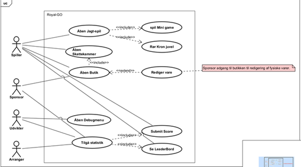

1. Resumé
Dette projekt omhandler udviklingen af en mobilapplikation, Royal GO, der benytter augmented reality (AR) til at fremme fysisk aktivitet blandt tilskuere til Royal Run 2025 i Viborg. Med afsæt i samfundsudfordringen om faldende fysisk aktivitet blandt unge og stigende mobilforbrug, undersøger projektet, hvordan AR og spildesignmekanismer – herunder kosmetiske belønninger – kan anvendes til at motivere brugerne til at bevæge sig. Projektet blev udviklet med Unity 6.3.6f1 i en SCRUM-baseret projektstruktur hvor resultatet er en AR-app, hvor brugeren opsøger virtuelle objekter i Viborgs byrum, spiller minispil og optjener in-game valuta til kosmetiske AR-effekter. Projektet viser, hvordan digitale oplevelser kan integreres i fysiske events og potentielt styrke bevægelse og social interaktion.
2. Indledning
I Danmark er der voksende sundhedsproblemer relateret til mangel på motion. Dette er en bekymrende tendens, da fysisk inaktivitet kan føre til alvorlige helbredsproblemer. (Bak,2022) For at imødegå denne udfordring har foreningen “Bevæg dig for livet” sat sig et ambitiøst mål: at gøre Danmark til verdens mest aktive nation i 2025. Et af de centrale initiativer under denne mission er “Royal Run”, der er et inklusivt og festligt event, som forgår i flere byere rundt om i Danmark, der fremmer motion for alle. Selv den royale familie deltager, hvilket sender et stærkt signal om, at alle er velkomne til at deltage, uanset alder, baggrund eller fysisk formåen.(The National Olympic Committee & Sports Confederation of Denmark, DGI and the Danish Athletic Federation, 2024) Samtidig lever vi i en tid hvor mange forældre er derfor bekymrede over, at deres børn ikke bevæger sig nok, fordi de sidder på deres mobiltelefoner hele dagen. En adfærd, de frygter kan have langvarige negative konsekvenser for børns forhold til motion, og deres generelle sundhed.(George & Odgers, 2015) Unge mennesker oplever til gengæld i stigende grad verden gennem deres telefoner. Hvor digitale oplevelser har en betydelig indflydelse på deres oplevelse og adfærd i den fysiske verden. Telefonerne bruges også som en form for eskapisme fra virkeligheden, især ved ubehagelige sindstilstande som kedsomhed, nervøsitet og stress.(Smith, 2016) En af de teknologier, der forsøger at bygge bro mellem den digitale og den fysiske verden, er augmented reality (AR). AR kombinerer elementer fra den virkelige verden med digitale komponenter, hvilket skaber en hybrid oplevelse, hvor brugerne kan interagere med både fysiske og virtuelle objekter samtidig. Hvor spil som Pokemon GO har fået stor ros for at opfordre til fysisk aktivitet kombineret med den digitale verden.(Wikipedia,2025) Pokemon GO's succes skyldtes i høj grad den nostalgiske effekt spillet havde på den enorme fanbase, men også på grund af de designvalg der blev taget i spillet. Loot boxes of cosmetics spiller en stor stor rolle. (Philips, 2020) Lootboxes har en negativ konation i gaming brancen, da de ofte uddnyttes som en form for gambling. Hvor man betaler virkelige valuta for at få måske at få noget imaterielt, og skaber splid ved forældres forsøg på at balancere økonomi og deres børns spillyst(Ash, J. 2024). Det viser sig dog at hvis lootboxes designes korrekt har de stor effekt på spillerens engagement og indlevelse i spillet (Jayemanne, D 2021). Af mulige belønnigner har cosmetic upgrades vist sig at være enormt effektive i at bibeholde brugere, med næsten op til 50% (Jayemanne, D 2021) Foreksempel oplevede animal crossing at engagementet i deres spil steg dramatisk da kosmetiske muligheder blev introduceret.
3. Hovedafsnit
Metoder
Projektet anvendte en iterativ udviklingsmetode baseret på SCRUM, hvor arbejdet blev opdelt i sprints og organiseret gennem møder og sprint-backlogs. Sprintene havde en varighed på 3-4 dage og kørte regelmæssigt fra Mandag-Torsdag & Torsdag-Mandag. I løbet af disse sprints blev der holdt daglige scrum-møder hvor der blev lavet reviews og retrospection og snakket fælles om udfordringer / roadblocks. Gruppen valgte ikke at have en konstant product owner samt scrum master, men i stedet ved hver sprint planning at udnævne nye gruppemedlemmer til disse roller, for at alle får mulighed for den læringsoplevelse. De teknologiske valg blev truffet ud fra funktionalitetskrav og stabilitet, herunder brugen af Unity 6.3.6f1 som udviklingsplatform samt GitHub til versionsstyring og samarbejde.
Projektaktiviteter
Inception-Phase
I dette projekt har vi anvendt Unified Process (UP) som rammeværk, og den indledende fase – Inception Phase – havde til formål at etablere en fælles forståelse af projektets vision, formål og overordnede omfang. I tråd med UP's principper fokuserede vi ikke på at definere alle krav i detaljer, men på at vurdere projektets overordnede idé, forretningsværdi og tekniske gennemførlighed. Unified Process bygger på iterativ og inkrementel udvikling, hvor krav og design gradvist formes. Ifølge Larman (2004) er målet i denne fase at etablere et fælles grundlag for projektets retning: "Inception is not the time to define all the requirements, or generate a believable estimate or project plan. That happens during elaboration" (s. 62).
Valg af målgruppe og teknologi
Vi valgte at rette fokus mod børn og unge, da flere rapporter og undersøgelser (bl.a. Bak, 2022) peger på en markant stigning i fysisk inaktivitet i denne aldersgruppe. Mobiltelefonen fylder meget i deres hverdag og bruges i stigende grad som en adgang til oplevelser – hvilket åbner mulighed for at motivere til fysisk bevægelse via den platform, de allerede engagerer sig i.
På den baggrund valgte vi at udvikle en mobilapplikation baseret på Augmented Reality (AR). Dette valg blev foretaget, fordi AR på mobiltelefoner kombinerer det digitale med det fysiske rum og dermed skaber en hybrid oplevelse, som potentielt kan flytte brugerens opmærksomhed ud i det fysiske miljø. Et alternativ som f.eks. et brætspil eller et computerprogram ville ikke kunne understøtte den ønskede sammenkobling mellem bevægelse og virkelighed.
Aktiviteter i Inception Phase
Vi påbegyndte fasen med udarbejdelsen af et velunderbygget problemfelt, som identificerede samfundsudfordringer ved fysisk inaktivitet, og formulerede en række målsætninger for, hvordan en AR-baseret spiloplevelse kunne understøtte Royal Run 2025 i Viborg.
”Problemformuleringen henvises til bilag X.” (er ikke sikker på hvordan den skal henvises)
I denne fase gennemførte vi følgende aktiviteter og leverancer:
Vision og business case: Vi ønskede at skabe en løsning, der kunne motivere ikke-deltagende tilskuere til Royal Run til at bevæge sig, ved at tilbyde en mobil oplevelse, som både var sjov, lokal og fysisk engagerende.
Krav og use cases: Vi udarbejdede med omkring 20 krav, som senere blev omskrevet til 7 use cases. Udvalgte use cases blev beskrevet i detaljer gennem ca. 10 use case descriptions, som vi brugte til at teste, om de opstillede krav kunne realiseres i praksis. Derudover blev et use case-diagram udarbejdet for at visualisere systemets funktionalitet og give et overblik over de vigtigste aktører og deres interaktioner med Royal GO-applikationen. Diagrammet viser, hvordan forskellige brugerroller – herunder spiller, sponsor, udvikler og arrangør – tilgår centrale funktioner som jagtspil, butik, statistik og leaderboard. Der anvendes include og extend-relationer til at indikere afhængigheder og valgfri funktionalitet (se det vedhæftede bilag)
Planning Poker og story points: For at vurdere omfanget af opgaverne i vores projekt anvendte vi Planning Poker som metode. Hver opgave blev diskuteret og tildelt et estimat i form af story points, baseret på gruppens konsensus. Metoden gjorde det muligt at balancere realisme og planlægning i sprintstrukturen. Disse story points dannede senere grundlag for prioritering og sprintinddeling.
Planning Poker og story points: For at estimere og prioritere projektets opgaver anvendte vi Planning Poker – en anerkendt metode til opgavestimering i agile udviklingsmetoder. Den første Planning Poker-session blev afholdt online, da vi havde gruppemedlemmer som var sygemeldte og ikke kunne møde fysisk. For at sikre alles deltagelse valgte vi derfor at gennemføre Planning Poker digitalt. Da vi benyttede en gratis version af værktøjet, var vi dog begrænset til kun tre spilrunder ad gangen, hvilket betød, at vi måtte genstarte spillet manuelt efter hver tredje opgave. Det gav lidt ekstra ventetid, men påvirkede ikke vores mulighed for at nå frem til fælles estimater. Metoden var særligt nyttig i den tidlige fase, hvor vi havde behov for at skabe overblik og afklare, hvilke opgaver der var mest krævende i forhold til både tid og kompleksitet. Hver deltager tildelte en opgave et antal story points ud fra sin egen vurdering af opgavens kompleksitet, usikkerhed og forventede tidsforbrug. Derefter diskuterede vi forskellene i estimaterne, og nåede frem til enighed gennem konsensus. Vi brugte en skala baseret på (1, 2, 3, 5, 8, 13, 20, 40, 100), hvilket er en almindelig praksis i SCRUM og hjælper med at undgå falsk præcision i estimering.
Et eksempel på denne estimering er opgaven: “Som spiller vil jeg gerne kunne tage billeder af mig selv i augmented reality med de cosmetics jeg køber”, som blev vurderet til 40 story points, da den krævede både AR-integration, billedhåndtering og UI-design. I modsætning hertil blev opgaver som “offline mode” eller “UI med få knapper” estimeret til blot 1–3 story points, da de var hurtigere at implementere og teknisk ukomplicerede.
Efter den første estimeringsrunde gennemførte vi en anden vurdering, da nogle opgaver viste sig at være mere omfattende eller mindre komplekse end først antaget. Disse to runder hjalp os med at refinere vores sprintplanlægning og ressourcestyring.
Story points blev anvendt som grundlag for prioritering, sprintinddeling og arbejdsfordeling gennem hele udviklingsforløbet. Samlet set blev der estimeret 405 story points, hvilket gav os et overblik over projektets samlede arbejdsbyrde.
Teknologivalg og arkitektur: Udviklingsmiljøet blev opsat i Unity 6.3.6f1, da det understøtter både mobiludvikling og AR-komponenter via AR Foundation. Versionsstyring blev håndteret gennem GitHub, hvor vi arbejdede med branches og pull requests. Enkle mock-ups og tekniske proof-of-concepts blev anvendt til at validere løsningsidéer.
Risikoidentifikation: I inception-fasen identificerede vi centrale tekniske og praktiske risici. Det inkluderede f.eks. potentielle problemer med GPS-nøjagtighed i bymiljøer, begrænsninger i mobildata og AR-præcision, samt risici vedrørende brugeropmærksomhed i trafikerede områder. Disse risici blev dokumenteret og vurderet med hensyn til sandsynlighed og konsekvens, og de indgår i vores arkitektur- og designovervejelser.
Tidsplan og gruppekontrakt: Projektets arbejdsindsats blev estimeret ud fra en kombination af undervisningstimer og selvstændigt udviklingsarbejde. Tidsplanen blev organiseret i korte sprintforløb á tre dage for at sikre løbende fremdrift og fleksibel prioritering. Til at understøtte dette arbejdede vi efter en SCRUM-lignende struktur og etablerede en gruppekontrakt, der fastsatte rammer for møder, kommunikation og ansvarsfordeling.
For at følge vores progression og skabe visuel transparens i projektets fremdrift, valgte vi at anvende et BurnDownChart. Selvom BurnDownCharts ikke længere er en officiel del af SCRUM-rammeværket, vurderede vi, at det var et effektivt værktøj til at skabe overblik og understøtte gruppens motivation. Diagrammet viste både det ideelle nedløb af opgaver over tid samt vores faktiske arbejdsbelastning, målt i story points.
I starten lå den faktiske fremdrift bag forventningerne, hovedsageligt fordi vi havde en påskeferie. Dette kan ses i diagrammet, hvor den faktiske kurve flader ud i flere dage (f.eks. fra 12/04 til 22/04). Senere i forløbet accelererede opgaveløsningen markant, hvilket resulterede i en stejl nedgang i resterende opgaver fra d. 15/05 og frem til aflevering.
Som det ses, blev projektet gradvist indhentet, og vi afsluttede arbejdet med næsten alle kerneopgaver fuldført til tiden.
Tidsplan
- 12/03 kl. 23:59 – Godkendelse af projektbeskrivelse
- 13/03 – 07/05 – Forberedende arbejde
- 08/05 – 26/05 – Projektperiode
- 27/05 kl. 00:00 – Aflevering
Undervisning: 5 dage × 3 timer = 15 timer
Undervisning: 6 dage × 3 timer = 18 timer
Selvstændigt arbejde: 30 dage × 3,8 timer = 114 timer
Selvstændigt: 10 dage × 7 timer = 70 timer
Crunch time: 4 dage × 15 timer = 60 timer
Samlet arbejdstid: ca. 277 timer pr. person
Refleksion over metoden
Ved at begrænse dokumentation og krav i inception-fasen fulgte vi intentionerne i Unified Process. Som Larman (2004) beskriver, er formålet i inception ikke at færdiggøre alle krav eller planer, men at sikre et grundlag for det videre arbejde. Dette princip – just enough, just in time – sikrede, at vi ikke overinvesterede i krav, som alligevel ville ændre sig under projektets videre udvikling.
Transition-fasen i Unified Process
Transition-fasen er den afsluttende fase i Unified Process og markerer overgangen fra udvikling til produktets reelle brug. I denne fase færdiggøres systemet, finpudses og gøres klar til endelig udgivelse. Der udføres omfattende test – herunder beta-tests – hvor systemet prøves af virkelige brugere for at identificere fejl, mangler eller forbedringsmuligheder. Derudover udarbejdes typisk brugerhjælp, træningsmateriale og teknisk dokumentation, som understøtter produktets udrulning.
I projekt blev transition-fasen ikke formelt udført, da udviklingsforløbet afsluttes med aflevering og ikke en egentlig produktlancering. Dog kan det argumenteres for, at selve afleveringstidspunktet fungerer som en naturlig overgang til transition-fasen. Hvis systemet videreudvikles eller afprøves under selve Royal Run-eventen, vil det fungere som en form for beta-test, hvor brugernes feedback vil være afgørende for eventuelle justeringer og fejlrettelser. Det ville gøre det muligt at evaluere systemets ydeevne i en realistisk brugssituation og derudfra tilpasse og optimere det endelige produkt.
Selvom transition-fasen officielt ikke er blevet gennemført, vurderer vi, at projektet befinder sig i et så modent udviklingsstadie, at overgangen til transition-fasen ville kræve relativt lidt arbejde. Systemet er i en forholdsvis stabil og funktionsdygtig tilstand, hvilket betyder, at det står tæt på at kunne implementeres i praksis.
Et centralt element i transition-fasen er brugerinvolvering. Det er her, udviklingsteamet får mulighed for at validere de valg og funktioner, der er implementeret gennem hele projektet. Denne validering kan ske gennem brugertests, observationer og spørgeskemaer, og feedbacken vil være afgørende for den sidste finpudsning af systemet. For os ville feedbacken fra Royal Run-deltagere kunne give værdifuld indsigt i, hvorvidt spillets AR-funktioner er intuitive, engagerende og teknisk velfungerende i praksis, og det ville være på baggrund af dette, at der ville kunne dannes endegyldige konklusioner, omkring opfyldelsen af vores problemformulering, som på nuværende tidspunkt står uden en endelig konklusion da, disse informationer fra brugeren omkring applikationen er manglende.
Til sidst ville det også være under transition fasen af systemet skulle blive Deployed, i dette tilfælde som førnævnt ville appen ikke fuldt blive lanceret, og grundet generelle udfordring omhandlende at få Applikationer på Google Play inden for kort tid, ville det tænkes at appen ville blive åbnet for til royalrun for ”tester” igennem en alternativ metode, enten ved installation direkte fra unity, eller en opsætning af en hjemmeside med guide til hvordan brugeren selvstændigt kan hente appen ned på deres telefon, dette ville fungere som en alternativ løsning for at undgå de gennerale udfordring omkring google play.
Resultater
Elaboration fase
Dokumentation af systemkrav

I forbindelse med dokumentationen af systemkravene til projektet blev der med udgangspunkt i de opstillede user stories udviklet et overordnet use case-diagram. (Se bilag XXX) Dette diagram havde til formål at give et struktureret overblik over systemets funktionalitet samt de forskellige aktørers interaktion med systemet. Gennem analysearbejdet blev der identificeret fire primære aktører: Spilleren, Sponsorer, Udviklere og Arrangører. Til disse aktører blev der knyttet i alt ni use cases, der repræsenterer centrale funktioner i applikationen. Fokus i elaboration-fasen blev lagt på at dokumentere hovedparten af disse use cases grundigt, da dette var essentielt for at opnå et fælles forståelsesgrundlag i gruppen, samt for at kunne danne en stærk arkitektonisk basis for den videre systemudvikling.
Uddybelse af Use cases
Efter fastlæggelsen af det overordnede use case-diagram blev næste skridt at foretage en systematisk og detaljeret analyse af de enkelte use cases. I denne proces blev det prioriteret at fokusere på de use cases, som involverer spilleren direkte, idet brugerens oplevelse og interaktion med spillet er det centrale mål af projektet. Det blev vurderet, at en dybdegående forståelse af disse funktioner var afgørende for at kunne træffe kvalificerede beslutninger vedrørende systemets design og implementering. Derimod blev visse use cases, såsom "Åben debugmenu" (Se bilag XXX), bevidst nedprioriteret i denne fase. Dette skyldes i dette eksempel, at funktionerne typisk først bliver relevante under selve udviklingen, hvor behovet for fejlsøgning og datavisualisering i systemet bliver tydeligere. På tilsvarende vis blev dokumentationen af use cases som "Submit Score" (Se bilag XXX) og "Se LeaderBord" (Se bilag XXX) udsat til construction-fasen, da disse funktionaliteter i højere grad blev vurderet som sekundære og først relevante i den senere del af projektets levetid hvis tid og resourcer tillod at implementere det. Beslutningen blev truffet ud fra en vurdering af opgavens samlede omfang og prioritering, med det formål at allokere udviklingsressourcerne mest hensigtsmæssigt.
Med henblik på at danne et grundlag for kodningen og implementationen af de valgte usecases under elaboration fasen blev en række af aktivitetsdiagrammer opsat. Heriblandt aktivitetsdiagrammet for usecaset "Åben Jagt-Spil", (Se bilag XXX & bilag XXX (Første er for use caset, andet for aktivitetsdiagrammet.)) som gruppen identificerede som værende kernedelen af projektet. Aktivitetsdiagrammet dækker over den endelige implementation og kodning skabt under elaboration fasen, som sammen med klassediagrammet (Se bilag XXX) dannede grundlag for opbygningen af systemet som skulle understøtte vores usecases.
Under udarbejdelsen af disse modeller blev det tydeligt, at visse tekniske aspekter, herunder realtidsopdatering af GPS-data og anvendelsen af plane detection til placering af AR-objekter, ikke var tilstrækkeligt afdækket i de oprindelige use case-beskrivelser. Elaborationsfasen gjorde det dermed muligt at klarlægge teknologiske krav, som ellers kunne være blevet overset, og som var afgørende for systemets funktionalitet.
Et system sequence diagram blev ligeledes udviklet for at skabe et mere præcist overblik over de dynamiske interaktioner mellem systemets komponenter, samt rækkefølgen hvori objekter og instanser oprettes og interagerer med hinanden. (Se bilag XXX) Diagrammet bidrog til at identificere nødvendige afhængigheder og databehov som yderligere hjælper med den fælles forståelse af omfanget samt funktionaliteten på projektet.
Strukturering af projektet

Inden implementationen og kodningen af kernedelen af spillet påbegyndtes blev et package diagram oprettet med henblik på at sikre en konkret struktur og arkitektur til projektets opbygning. (Se bilag XXX) Package diagrammet sikrer en dokumenteret struktur og giver yderligere indblik i de påkrævede systemer der skal til for at opfylde kravene specificeret fra use cases. Yderligere ved udarbejdelsen af diagrammet blev det på baggrund af single responsibility besluttet at dele håndteringen af GPS og AR-funktionaliteter i seperate moduler for at sikre vedligeholdelsen på den lange bane.
Dannelse af kerne-arkitektur og prototype
Elaborationsfasens sidste del fokuserede på implementeringen af det identificerede kernesystem, som skulle danne grundlaget for spillets centrale funktionalitet. Det indebar udvikling af systemer til behandling af GPS- og koordinatdata samt oprettelsen af funktionalitet til instansiering og håndtering af objekter i AR-verdenen. Resultatet var en funktionel prototype, der demonstrerede, hvordan "kronjuveler" kunne placeres i AR-verdenen og interageres med af spilleren, samtidig med at spillerens lokationsdata blev opsamlet og gemt i form af længde- og breddegrader. Denne prototype havde ikke kun til formål at verificere funktionaliteten, men tjente også som et vigtigt værktøj til at evaluere teknologivalg, systemarkitektur og arbejdsgange i Unity. Prototypen gav desuden gruppen et realistisk indblik i tidsforbruget ved implementering af diverse komponenter, hvilket viste sig at være afgørende i en mere realistisk og præcis planlægning af de kommende udviklingssprints.
Konklusion på elaboration-fasen
Elaboration-fasen spillede en essentiel rolle i at forme det endelige systemdesign og sikre, at gruppen havde et solidt teknisk og forståelsesmæssigt fundament for den videre udvikling. Gennem udvikling af modeller, prototyper og systembeskrivelser blev centrale krav til systemet gjordt konkrete. Fasen bekræftede de valgte teknologier og skabte en fælles forståelse for systemets opbygning. Med udgangspunkt i det arbejde, der blev udført i denne fase, stod gruppen med en forøget forståelse for omfanget af projektet, kravene bag og mængden af tid diverse opgaver fremadrettet bør tage.
Construction
Følgende afsnit beskriver construktions fasen af Royal GO. Her gennemgås hvordan design og analyse er blevet implementeret i arkiteturen, samt hvordan integrationen med Unitys editor er håndteret. I dette afsnit vil der blive referetet intensivt til Design klasse diagrammet (indsæt reff), og Highscore sekvens diagrammet (indsæt reff) som herfra vil benævnes som henholdsvis DKD (design klasse diagram) og HSD (highscore sekvens diagram).
Integration med unity
Royal Runs business kode er primært skrevet i rene c# klasser, hvor Monobehaviour klasser er forsøgt at holde til et minimum, og kun hvor der interageres direkte med Unity editoren. Som det ses på DKD under klassen: Monobehaviour, der repræsentere integrationen mellem vores model og Unity.
For at tilgå Unitys indbyggede metoder er namspaceed ”UnityEngine” implementeret på størstedelen af alle klasser, hvor nedarvning fra Monobehaviour er forsøgt undgået. Der er dog nogle steder hvor monobehaviouren kunne være undgået, men er implementere for at lette udvikleres arbejde, som det fx ses i WorldSpawnerControlleren, WorldFactory og WorldElementSpawner, da det giver en nemmere adgang til at styre klasserne gennem editoren. De steder hvor Monobehaviours er nødvendige er i specifikke Unity objekter som GameObjects og prefabs.
Prefabs er primært benyttet til tre formål: at håndtere objekter med geometri så de kan bruges somm flyweight, at organisere scripts og componenter til mere komplekse funktioner, og til sidst til at samle hele scener. Sidst nævnte er primært for at undgå git-relateret problemer med Unitys scener, men det har også fordele når det kommer til integrations test af scener.
Der er benyttet en simpel scene struktur, hvor der prioriteres at have en enkelt scene aktiveret ad gangen. Det kommer også til syne på DKD at klassen MainSceneChanger har relationer til en masse forskellige scener. I praksis er denne knap refereret på alle UI knapper der har med sceneskift at gøre.
Overordnet Arkitektur
Der er fem overordnede systemer i Royal GO, NavigationsSystemet, AR scenen, UI, persistency og Minigames. Disse fem systemer kan beskriver kernen i spillet, hvortil der kommer der andre supporterende systemer for spiloplevelsen, som fx butikken og dens varer. Dette afsnit vil beskæftige sig med de fem overordnede systemer.
Navigationsystem
Navigations systemet - kaldet NavigationSystem på DKD - er drivkraften for spillets core play-loop: at finde skatte. Denne klasse benytter 3 design mønstre: Facade, observer og singleton.
Facademønstret bliver brugt til at samle de mange klasser der bruges i indsamling og beregning. Bag facaden indsamler klasserne GPSSystem, og Kompas system data fra telefonens sensorer, omregner dette til mere brugbare informatiner. Disse informationer samles af: NavigationSystemData, der herefter bliver broadcastet til alle klasser der har abonneret på den i observer mønsteret.
Observeren bruges til at fjerne afhængigheden fra de dybe databaserede lag, og for at sikre at den geografiske data er let tilgængelig i hele systemet. Det er også herfra muligt at styre refresh-raten på den interne logik, da observereen transmitter baseret på en udvikler defineret timer. I den nuvrærende udgave af Royal Run er det de to klasser: JuvelController og KorneController der primært er afhængige af indputtet fra geolocationen, da disse styre spillets centrale interaktioner: at finde en kron juvel, eller en konge krone.
Endeligt, er singleton mønstret implementeret, da det er fordelagtigt at undgå flere forskellige instancer af denne klasse. Da NavigationsSystemDataen boradcastes af en timer, kan flere instancer nemt kunne lede til alvorlige performance problemer, der er besværlige at fejlsøge for.
Ar scene
Vi benytter Unity’s XR pakke til at styrer AR oplevelse i vores spil. Denne pakke indeholder værktøjer til at interagere og manipulere en spilverden overlagt en live video feed af virkeligheden. Sov vist på DKD, er Royal GOs arkitektur opbygget omkring et enkelt indgangspunkt: ARFactory prefabet. Dette prefab består af to hoved komponenter: WorldSpawnController – der er ansvarlig for at styre hvad og hvornår der skal spawne, og WorldElementSpawner - der håndtere logikken for hvordan det kan spawnes. Først nævnte har en række under controllere der signallere om kriterierne for en spawn er opfyldt, og på HSD vises sekvensen for at spawne en juvel under punkt 11 og frem. Sekvensen 11 til 11.1.1 viser hvordan WorldSpawnControlleren modtager signal fra JuvelControlleren, mens sekvens 11.1.1.1.1.1 viser hvordan WorldElementSpawneren begynder spawn processen.
For at kunne spawne i en AR verden er der to kriterier der skal være opfyldt: Der skal være et GameObject at spawne, og en placering at spawne det på. I Royal GO, bruges der udelukkende plane detection til at finde en egnet placering. I praktisk betyder det at når der skal spawnes, skal der konstant kigges efter om der er en egnet plan at placere et GameObject på, og det er netop denne logik som WorldElementSpawneren håndtere.
Selve spawn processen foregår ved at kalde WorldSpawnFactorien (HSD-sekvens: 11.1.1.1.1.1), og give den en konkret Factory, fx JuvelFactorien. Her sørger den konkrete Factory for at et konkret produkt eksistere på angivne prefab (HSD-sekvens: 13), og at det spawnes på den givne location fra WorldElementSpawneren (HSD-sekvens: 11.1.1.1.1.1.1.1).
Det konkrete produkt script er ansvarlig for interaktionen for det GameObject den er tilføjet til. Fx kan det ses på DKD at både JuvelProduktet og KroneProduktet bruger IPressHandle, med funktionen OnPress, hvor det på HSD kan ses på sekvens 13.1.1 hvordan produktet tilføjer ARPressDetector til Juvel prefab’et. Noter på HSD sekvens 14, at ARPressDetector configureres efter den er tilføjet som component. I juvelens tilfælde vil et tryk resultere i at der tilføjes guld og point til spillerens score, som herefter gemmes lokalt.
Persistens
Der er tre funktioner der benytter persistens i Royal GO: Score, guld og butik systemerne. De benytter hver især lokal lagring gennem PlayerPrefs, dertil kommer at score også kan tilgå en online database for at gemme og vise highscore.
HSD beskriver hvordan en spiller starter spillet, får point fra en juvel, og hvordan disse point gemmes lokalt. Mest interessant for persistens er sekvens 15.111 til 15.1.1.4.1.1, hvor det kan ses at ScoreTrackerSeparated (indsæt kilde henvisning) bruges efter guldet er tilføjet, og kalder AddScore() (line refference?) til at overføre den nye score til trackeren, der så gemmer den med SaveScore() ()line reff?). Scoren gemmes i PlayerPref under key’en: ”GemScore” der overskrives ved hver ny entry.
Den online highscore styres af et trediepart system der er designet, leveret og hostet af Pelle Sølvkjær Christensen. Klassen der benyttes hedder AddScore (indsæt reference) hvor metoden SubmitScore(string initials, int score) bliver kaldt. Dette score board viser de 10 højeste entries, og kan kaldes med metoden GetLeaderboard fra klassen LeaderBorad (indsæt reff).
Udvikling af test til systemet
At teste et system i Unity kan gribes an på to måder: white box og black box. Her i construction fasen er der primært benyttet whitebox testing, ved at skrive automatiserede test. Til det har unit en række værktøjer, hvoraf der i dette projekt er benyttet editor test (unit test) og play mode test (integration test). Den praktiske forskel på disse test er at unit testen ikke kan teste scripts der nedarver fra Monobehaviour, da de har brug for en aktiv scene til at fungere. Hvorimod integrationstesten simulerer en afspillet scene.
Unit testing
For at kunne udføre unit tests af system er det som nævnt nødvendigt at arbejde med rene C# klasser. Samtidig skal der også være nogle reelle beregninger og input at beregne for at kunne bevise funktionaliteten. Derfor er Navigations systemet det mest gennemtestede system, da det ikke netop ikke bruger Monobehaviours, og skal håndtere en masse forskellige input. Det er samtidig det system der har den største interne kompleksitet, som følge af facade mønsterets struktur.
Der er i alt 9 test tilkoblet navigations systemet, der sikre at kompas og GPS beregninger udføres korrekt, samt eventuelle edge cases og fejl bliver håndteret korrekt.
Integration testing
Integrations test i Unity har større omfang end almindelige unit tests. Her bliver hele systemet opstillet og testet, derfor kan hele funktionaliteten af systemet testes af få test. I dette system bliver der teste et fuld succesfuld scenarie af gennemførsel, det vil sige: opstart, spawn af juvel, opsamling af juvel, opdatering af guld og score systemet, ankomst til korrekt GPS location, spawn af krone op opsamling af krone. Derudover er der en integrations test af funktionerne for de visuelle elementer relateret til skattejagten.
4. Diskussion
Der er ikke nogle objektive resultater at diskutere, da der ikke er udført nogle test, eller indsamlet noget data i dette projekt. Ingen af de benyttede metoder i projektet har givet afkast i en objektiv indsigt, indenfor projektets rammer.
Der kan dog argumenteres at følgende problem formuleringen er besvaret : Hvordan kan augmented reality bruges til at skabe en digital oplevelse af Royal Run? Om svaret er positivt eller negativt er ikke til at sige. Men der eksistere nu, utvivlsomt, en digital oplevelse af Royal Run, der benytter argumentet reality. Det vil derfor for fremtiden være anbefalet at være opmærksom på denne slags formulering af problemer, hvor svaret faktisk vil være målbart.
Hvad kan vi lære af Pokémon GO's brug af GPS til at skabe en interaktiv oplevelse? Falder i samme kategori som forrige problemformulering, dog med større mulighed for at teste for objektive resultater. Man vil fx kunne opsætte en mindre spilgruppe, hvor man sammenligner deres spiloplevelser i de to spil. Her vil man gennem kvalitative interviews og målinger af fx bevægelser, hjerterymt og antal interaktioner, kunne besvare på om Royal Go har kunnet implementere ligneden effekter som Pokémon GO. dog kan der på baggrund af Pokemon go's succes argumentere for hvorvidt at brugen af augementet reality combinerede med brugen af GPS, kan være med til at få ungen mennesker, til at være mere aktive, data fra pokemon go, viser at folk er op til 25% mere aktive i den periode de spiller pokemon go, end de var før.(Althoff et al., 2016), baseret på dette kan det tænkes at Royal Go kan have samme effekt, dog er det ikke muligt at påvise dette uden det indsamle data, som først ville komme til at være muligt efter Royal Run 2025.
For problemformuleringer: Hvordan kan augmented reality øge tilskuernes fysiske aktivitet? Er det ikke muligt at påvise nogle ændringer i tilskuernes fysiske aktivitet, uden at indsamle data. dog her kan der igen kigges på de før nævnte data fra pokemon go, om Royal go kan havde samme effekt, vil dog først kunne besvares efter Royal Run 2025.
for Hvordan kan man benytte kosmetiske belønninger til at øge engagementet. kan der igen ikke på nuværende tidspunkt drages Konklusion baseret på Royal GO, dog kan der argumenteres for at kosmetiske belønnninger i spil har en positiv effekt på spilleres engagement i spil, da kosmetiske belønninger i spil har vist og havde flere påvirkningen af spillere, generalt ses det at spillere føgler at kosmetisk belønninger giver dem en mulighed for per personliggøre deres spiloplevelse, samt så ligger der sig også en stor del op af ene social status, at havde sjællender eller dyre kosmetiske belønninger, kan give en spiller en følelse af at være bedre end andre spillere, ydeligere ses det også at der er at der er en glæde for spillere generalt bare i at få nye kosmetisk belønninger, værdigen spillere får ud af disse kosmetiske belønning anses også genneralt til at være så store af spillere er villige til at bruge op til store mængder af penge, til at optjene de kosmetiske beløninger, selv om disse blot er et digitalt produkt (The Psychology of Skins: Why We Spend Big on Virtual Cosmetics - PlanetOfSkins, 2025.), generalt vise alt dette til sammen kan tyde i retning af at kosmetiske beløninger har en forbindelse til at øge engagementet blandt spillere i spil, dog som de andre problemformuleringer, er det ikke muligt at konkludere noget omkring dette i forbindelse med Royal Go endnu, da der ikke er indsamlet data omkring dette, dog er videne omkring dette, samt omkring inflydelsen af Pokemon Go har klart været med til at påvirke det generalle design retning af Royal Go, da det er blevet designet med dette i tankerne.
For at afdække, og undgå, de svagheder der måtte have opstået i dette projekt, vil en anbefaling være at teste effekten, og / eller indsamle data om projektets indflydelse. Eksempler sådanne metoder vil kunne deles op i to kategorier: før debut på Royal Run, og under Royal Run. Hvis der testes inden begivenheden, vil mindre, men kvalitative, test være anbefalet, hvor, hvis det derimod er under Royal Run vil flere test af kvantitativ natur være oplagt.
Før debuten af Royal GO vil små sessioner med et lille hold spil testere være anbefalet. Her er der mulighed for at observere deres opførsel, reaktioner, samt diskutere deres oplevelse mere i dybden. Deres indsigt vil være af høj kvalitet, og der er tid og plads til fordybelse.
Efter debut til Royal Run, vil spørgeskemaer, eller data indsamling gennem app’en være oplagte metoder. Der er dog den klare ulempe ved data indsamlingen at der er en mængde juridiske og moralske overvejelser man skal gøre sig når man arbejder med spil til børn. Det vil derfor anbefales at bruge et spørgeskema til at indsamle data.
5. Konklusion og anbefalinger
Projektet har vist, at det er muligt at udvikle en AR-applikation, der understøtter fysisk aktivitet og engagement gennem spildesign og sociale interaktioner. Royal GO integrerer GPS, AR og belønningsmekanismer i en brugercentreret løsning, som kan være med til at aktivere passive tilskuere og dermed støtte initiativer som Bevæg dig for livet.
Anbefalinger til fremtidige projekter:
- Inkluder tidlig brugerinddragelse gennem interviews eller observationer.
- Undersøg effektmåling af fysisk aktivitet via skridttællere eller lignende.
- Arbejd med datasikkerhed og brugersamtykke fra starten.
6. Referencer
2022.
Størstedelen af danske børn og unge er ikke aktive nok trods gode muligheder for bevægelse.
Idrættens Analyse Institut
2025.
Royal Run is an annual sports event that takes place in several Danish cities
Move for Life
2015.
Seven fears and the science of how mobile technologies may be influencing adolescents in the digital age
Duke University
https://pmc.ncbi.nlm.nih.gov/articles/PMC4654691/pdf/nihms704598.pdf
2016.
Using Cell Phones As An Escape Mechanism In Some Situations Connected To Depression, Anxiety
Medical Daily
https://www.medicaldaily.com/cell-phone-depression-anxiety-escape-mechanism-376576
2020.
We should talk about Pokémon Go's loot boxes
EuroGamer
2024.
Between Gaming and Gambling
Children, Young People, and Paid Reward Systems in Digital Games
https://www.gaminggamblingresearch.org.uk/wp-content/uploads/2022/10/ESRC-BGG-Final-Report-2022.pdf
2021.
Loot Boxes and digital gaming
The University Of Edinburh
https://www.pure.ed.ac.uk/ws/portalfiles/portal/293610540/Loot_Box_REA.pdf
2016
Influence of Pokémon Go on Physical Activity: Study and Implications
Journal of Medical Internet Research
2004
Applying UML and Patterns: An Introduction to Object-Oriented Analysis and Design and the Unified Process
3rd ed.
Prentice Hall
2025
The Psychology of Skins: Why We Spend Big on Virtual Cosmetics
PlanetOfSkins
. https://planetofskins.com/the-psychology-of-skins-why-we-spend-big-on-virtual-cosmetics